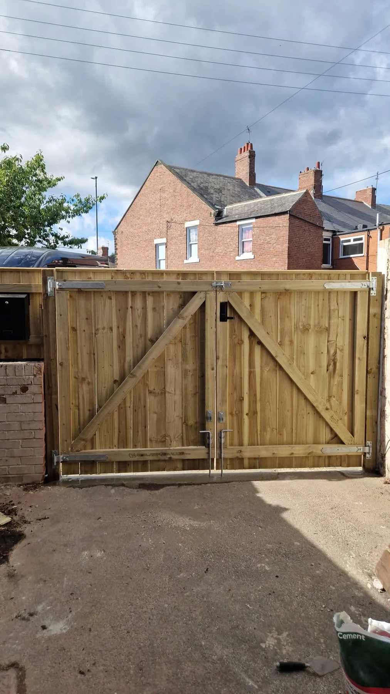

NORTH EAST
A better fit for your entrance.
From a single side gate to double driveway gates, we fit timber gates to suit the opening and the way you use it. Include the approximate width and let us know if there is existing fencing to match.
Request a free quote →OUR PROJECTS
See our work.
See examples from our projects. Select an image to see it in full.
FREE QUOTES
Tell us about
your project.
Send us your location, approximate measurements and a few details about the work. You can attach photos in WhatsApp before sending.
Serving the North East and surrounding areas.
The form prepares a WhatsApp draft for you to review and send.